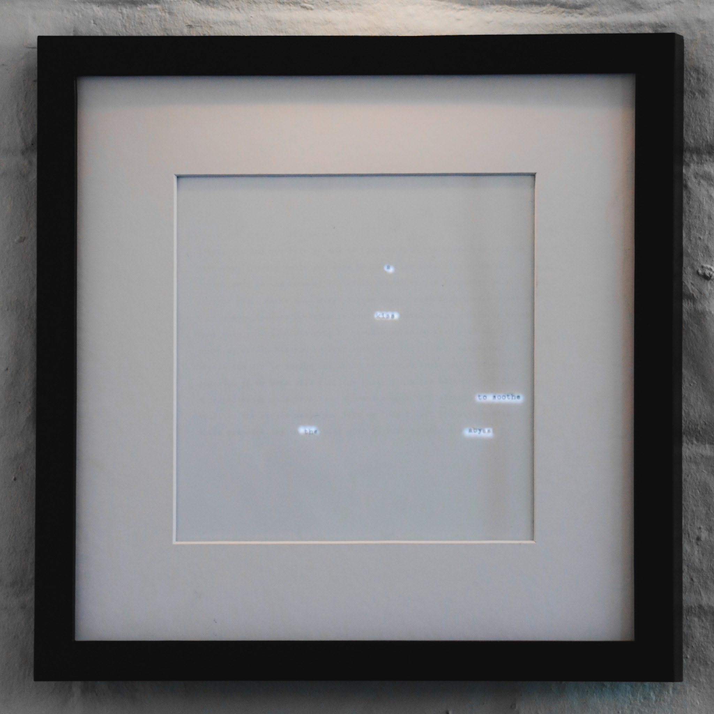

Electric Haibun
LED matrix display, typed poetry on paper
Poem: Crooked Smile 2024
My interpretation of a burning haibun-a dynamic poetry piece where a prose poem is obscured, only partially revealed through subtle backlighting. Select words and phrases emerge, never exposing the full text, instead recontextualizing its meaning and forming new, fragmented poems from the original. This interplay between visibility and erasure embellishes the source text, inviting reinterpretation and transformation.